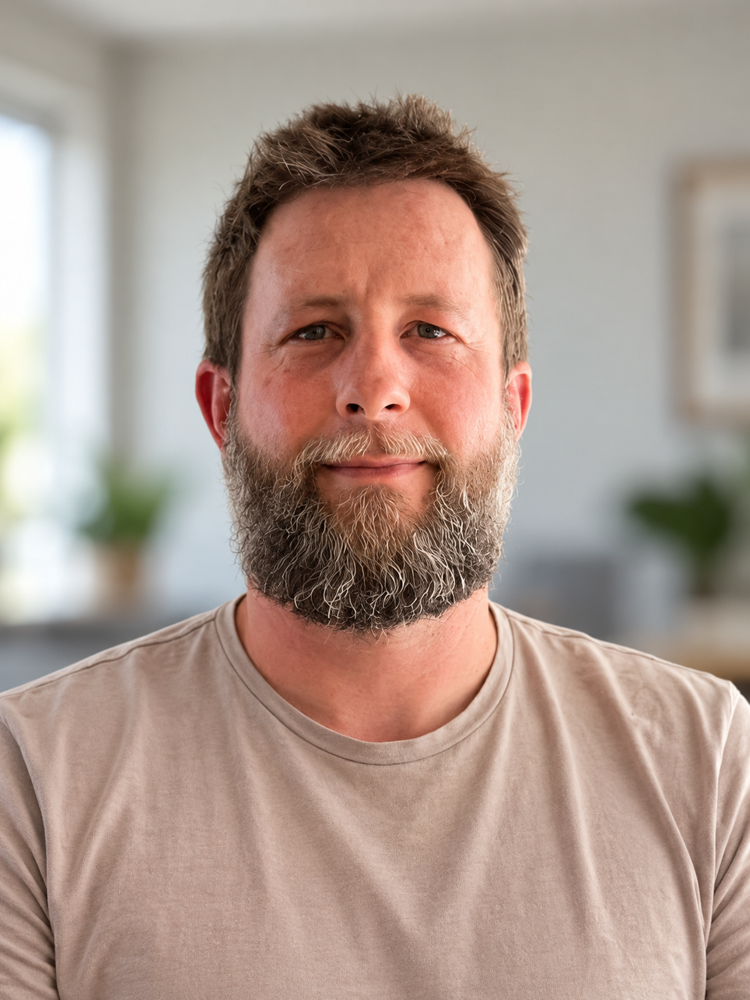

Untangle complex systems
Find a practical route through difficult architecture and make existing software easier to change.
I help teams make complex systems easier to change, safer to release and less costly to run. Hands-on engineering and technical leadership for UK companies, from Cape Town.
Let's talk ↗
I start by listening, reading the code and understanding the problem. Then I work with the team to find a practical path through it.
Find a practical route through difficult architecture and make existing software easier to change.
Improve reliability, releases and operational costs while keeping essential services running.
Combine architecture and hands-on delivery with mentoring, clear decisions and collaboration across disciplines.
At Sea by Maritech, part of the Clarksons Group, I progressed from contract senior engineer to Tech Lead on a platform used by charterers and brokers around the world.
I helped lead its evolution from an on-premises monolith to Azure microservices, and then to a containerised modular monolith. Along the way, I supported production systems, led releases without rollbacks and helped improve the release process to allow zero downtime.
Experience across shipping, asset management, commodities, finance, healthcare and more.
Tech Lead & Senior Full Stack Developer · 2018–2025
Senior Software Developer, contract · 2014–2017
University of London, Czarnikow, FlowCentric and MHCB · 2006–2014
C#, .NET, TypeScript, React, Azure, Kubernetes, CI/CD and automated testing. Currently learning and applying AI-assisted development.
I'm looking for a remote contract with a UK team. I have dual UK and South African citizenship and strong UK working-hours overlap.
adam@adamavenant.com ↗